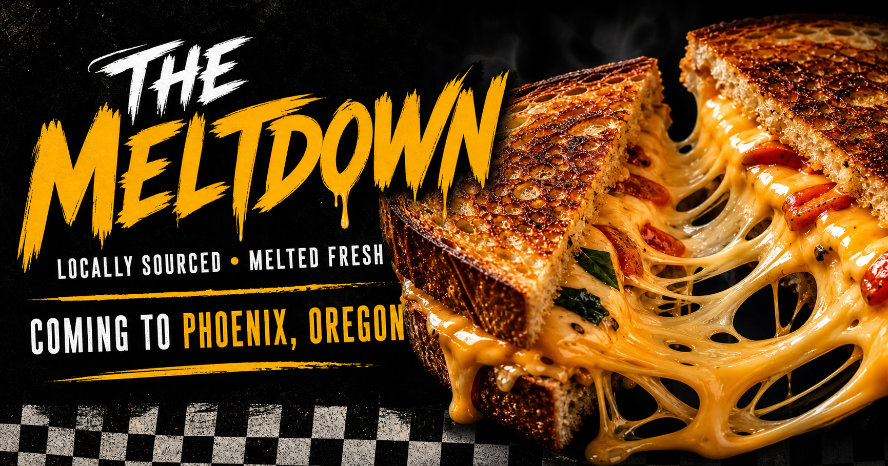
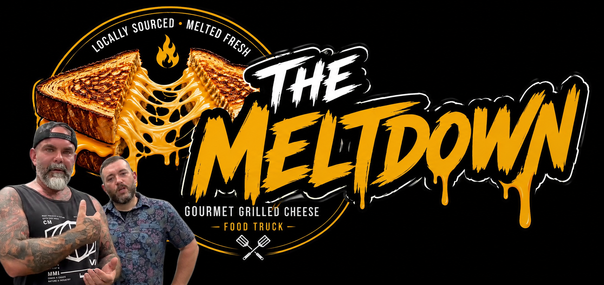

The OG
Cheddar · mozzarella
MeltSourdoughWrapSourdough wrap

Locally sourced • Melted fresh
Locally sourced, made fresh, and served hot at Rally at Ethos. Come hungry. Leave connected.

More than a food truck
The truck is the visible part. The real goal is creating a place where conversations happen, friendships form, and local businesses connect.
The Meltdown is serving at Ethos Training Academy and growing through direct community support, not corporate backing. Every supporter helps fund equipment, ingredients, community events, and the countless little things that keep a real local business rolling.
“The Meltdown serves food. Ethos creates the space. Together, they create community.”
Become part of the First 100
Choose your level. Help grow The Meltdown the local way. Get food, gear, founder status, and permanent bragging rights.
Sticker + name on the Supporter Wall
Hat or shirt + Supporter Wall recognition
Hat + shirt + 5 free sandwiches
Hat + shirt + 10 free sandwiches + VIP event
Every dollar helps The Meltdown keep growing.
Choose your support level →Catch the truck
Stops, pop-ups, collabs, and special events will live right here, so nobody has to hunt through a social feed to find lunch.
📍 Phoenix, Oregon
4414 S Pacific Hwy · Phoenix, OR 97535
More dates dropping soon. Follow The Meltdown for same-day location updates and new event announcements.
Follow schedule updates ↗The home base
Serving Phoenix, Medford, Central Point, Ashland, Rogue River, Jackson County, and communities across Southern Oregon.